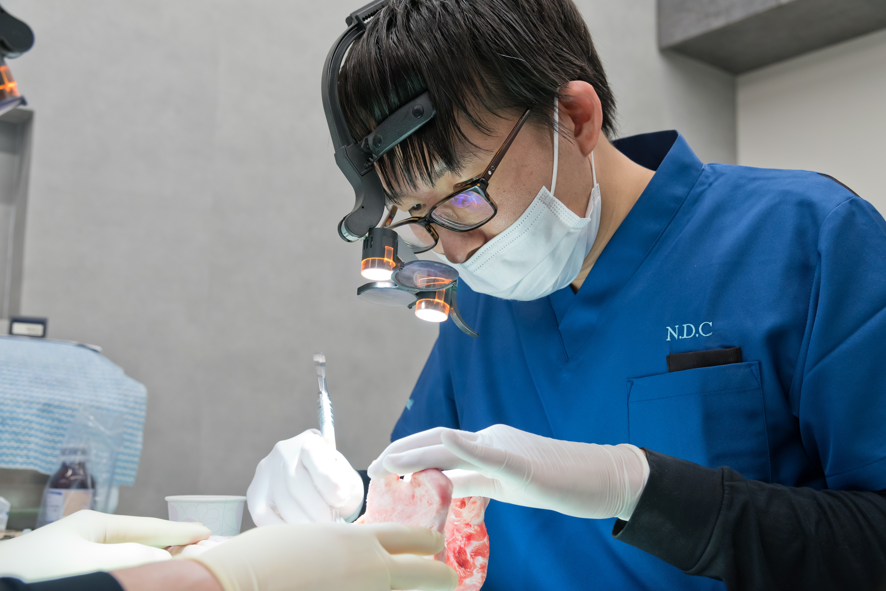
徳島大学卒職場の雰囲気は明るく、困ったことや気になることがあれば相談しやすい環境だと感じています。 歯科医師だけでなく、衛生士さんや受付スタッフも含めて、患者様のためにどうするのが良いかを自然に話し合えるところが、この医院の良さだと思います。
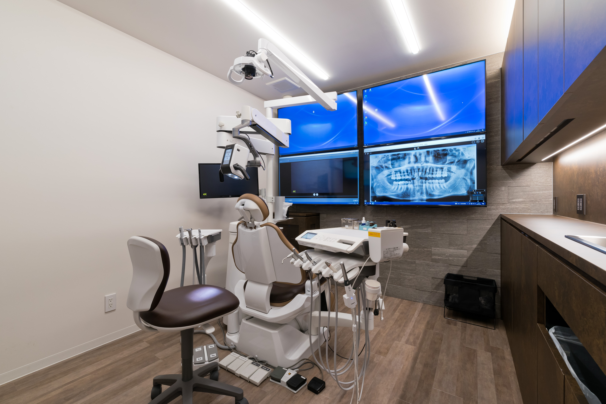
最初からすべてを一人で抱え込む必要はありません。
固定給をベースに、基礎から一歩ずつ。
担当Drのサポートと3年間のカリキュラムで、無理なく成長できる環境です。
一つでも当てはまるなら、
なかむら歯科の働き方が合うかもしれません。
無理なく働きながら、着実に成長できる環境を整えています。
最初から歩合で売上を追うのではなく、心にゆとりを持って臨床経験を積んでほしい。だからこそ、固定給をベースにした給与体系を用意しています。
総支給額には、基本給 ＋ 固定残業代 ＋ 住宅手当（50,000円）＋ 交通費（5,000円）が含まれています。
※固定残業代は、設定された時間分の時間外労働に対する手当として支給します。設定時間を超えた時間外労働については、超過分を別途支給します。
| 卒後年数 | 基本給 | 固定残業代 | 固定残業時間 | 支給合計 |
|---|---|---|---|---|
| 2年目 | 339,000円 | 111,000円 | 45時間 | 505,000円 |
| 3年目 | 354,000円 | 116,000円 | 45時間 | 525,000円 |
| 4年目 | 377,000円 | 123,000円 | 45時間 | 555,000円 |
| 5年目 | 415,000円 | 135,000円 | 45時間 | 605,000円 |
| 6年目 | 452,000円 | 148,000円 | 45時間 | 655,000円 |
| 7年目以降 | 477,000円 | 173,000円 | 50時間 | 705,000円 |
| 卒後年数 | 基本給 | 固定残業代 | 固定残業時間 | 支給合計 |
|---|---|---|---|---|
| 2年目 | 297,900円 | 36,800円 | 15時間 | 389,700円 |
| 3年目 | 311,100円 | 38,400円 | 15時間 | 404,500円 |
| 4年目 | 331,300円 | 40,900円 | 15時間 | 427,200円 |
| 5年目 | 364,600円 | 45,000円 | 15時間 | 464,600円 |
| 6年目 | 397,100円 | 49,000円 | 15時間 | 501,100円 |
| 7年目以降 | 419,200円 | 69,000円 | 20時間 | 543,200円 |
| 卒後年数 | 基本給 | 固定残業代 | 固定残業時間 | 支給合計 |
|---|---|---|---|---|
| 2年目 | 271,600円 | 73,500円 | 30時間 | 400,100円 |
| 3年目 | 283,700円 | 76,800円 | 30時間 | 415,500円 |
| 4年目 | 302,100円 | 81,800円 | 30時間 | 438,900円 |
| 5年目 | 332,500円 | 90,000円 | 30時間 | 477,500円 |
| 6年目 | 362,100円 | 98,000円 | 30時間 | 515,100円 |
| 7年目以降 | 382,200円 | 137,900円 | 40時間 | 575,100円 |
| 卒後年数 | 基本給 | 固定残業代 | 固定残業時間 | 支給合計 |
|---|---|---|---|---|
| 2年目 | 271,600円 | 36,800円 | 15時間 | 363,400円 |
| 3年目 | 283,700円 | 38,400円 | 15時間 | 377,100円 |
| 4年目 | 302,100円 | 40,900円 | 15時間 | 398,000円 |
| 5年目 | 332,500円 | 45,000円 | 15時間 | 432,500円 |
| 6年目 | 362,100円 | 49,000円 | 15時間 | 466,100円 |
| 7年目以降 | 382,200円 | 51,800円 | 15時間 | 489,000円 |
※住宅手当は、遠方から当院近辺に転居する常勤歯科医師が対象です。
安定した固定給をベースに、経験や能力に応じた収入アップも目指せます。勤務開始当初は固定給で基礎を固め、その後は能力に応じて能力給（歩合18～22％）への移行も可能です。昇給は年1回行います。特別手当（医院規定）も用意しています。
遠方からの勤務・転居を検討している先生もご相談ください。
| 3年目 | 4年目 | 5年目 | 6年目 | 7年目 |
|---|---|---|---|---|
| 630万円 | 666万円 | 726万円 | 786万円 | 846万円 |
※上記は月額総支給額×12か月で算出した参考年収です。住宅手当・交通費を含みます。賞与等は含みません。
「これで合っているのか」「失敗したらどうしよう」
若手の頃は誰でも不安を抱えるものです。
なかむら歯科では、技術の指導だけでなく、相談できる診療上の安心感も大切にしています。
いつでも質問できる環境を整えています。
診療終了後の振り返りや、パノラマ・口腔内写真を用いた症例検討でサポートします。
技術の悩みやキャリアについてゆっくり相談できます。
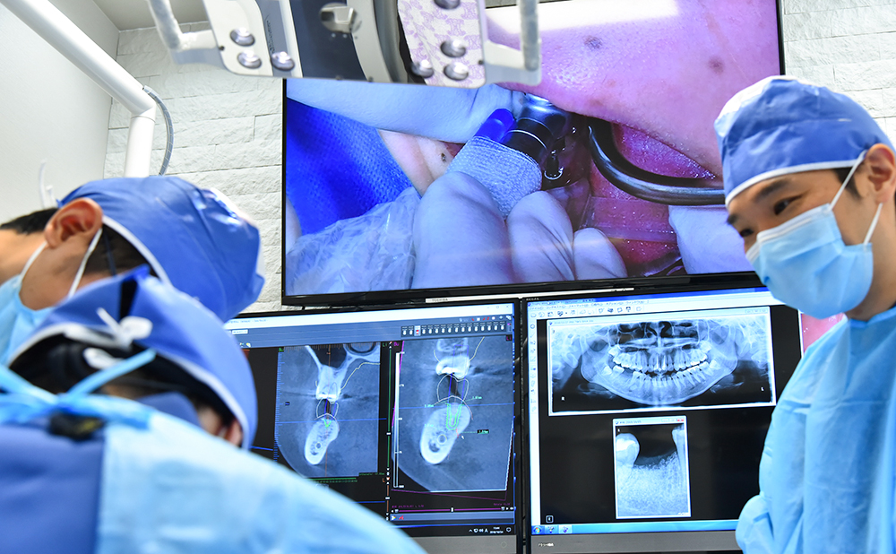
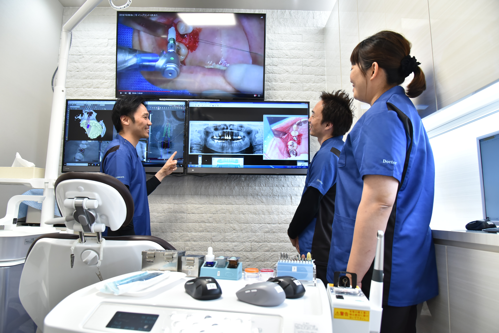
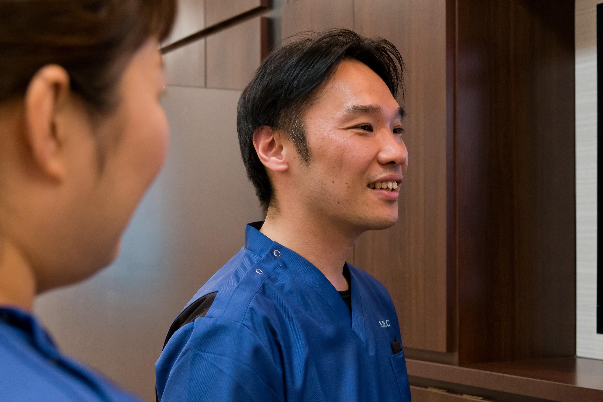
急がなくていい。でも、着実に前へ。
「何を学べばいいか分からない」状態をつくらないよう、基礎から段階的に経験できる仕組みを整えています。
歯冠修復・歯内療法を中心に。
模型実習や先輩Drの丁寧な指導を受けながら基礎を固めます。
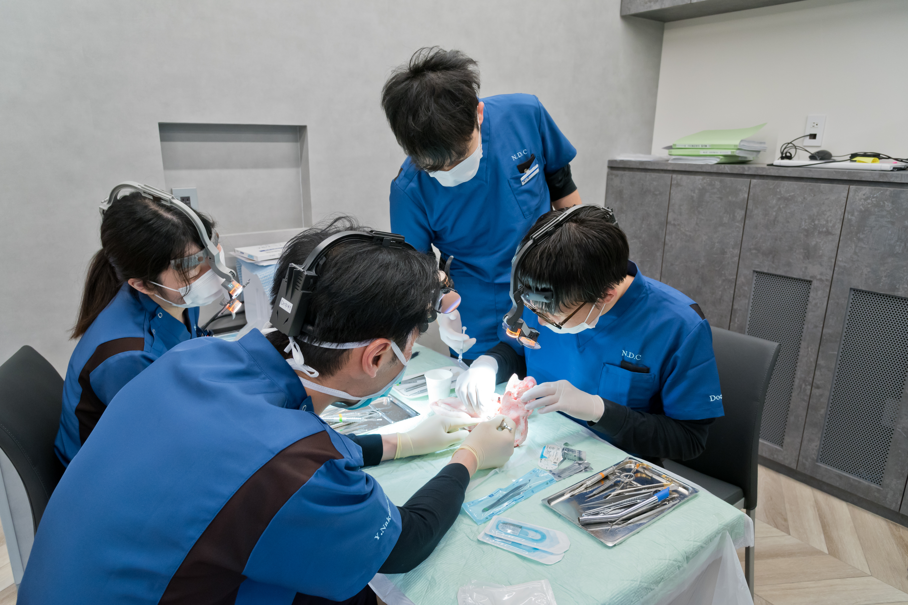
歯周病分野へステップアップ。
患者様と向き合い、責任を持って治療を進める力を養います。
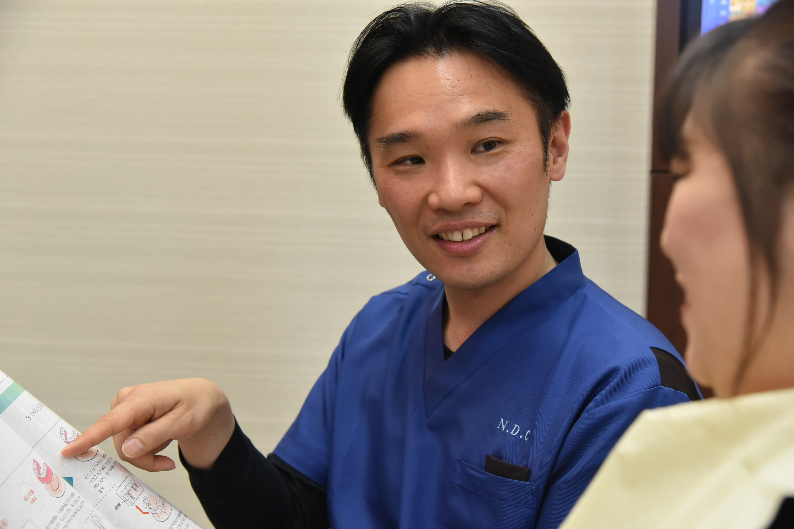
口腔外科・義歯・インプラントなど。
3年間で矯正以外の治療を一通りできるようになることを目指します。
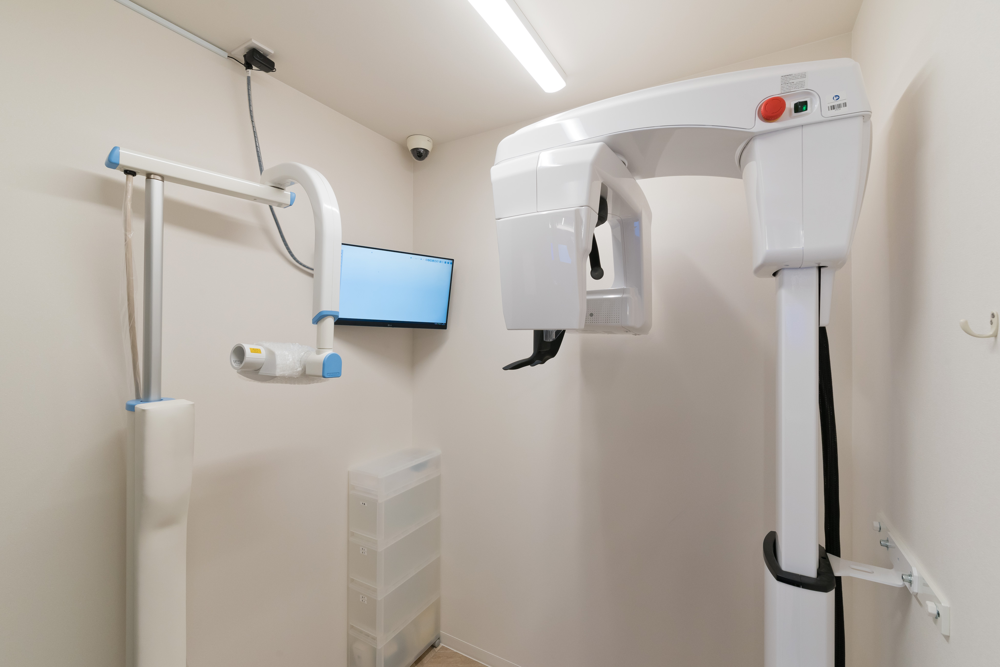
※医院指定セミナーは全額医院負担。その他のセミナーについて、下記の補助制度があります。
| 勤続年数 | 1年目 | 2年目 | 3年目 | 4年目以降 |
|---|---|---|---|---|
| 医院負担割合 | 20％ | 30％ | 40％ | 50％ |
| 年間上限 | 10万円 | 20万円 | 30万円 | 40万円 |
基礎をしっかり固めたその先へ。「今の自分に必要なもの」と「将来やりたいこと」、どちらも選べる環境を用意しています。
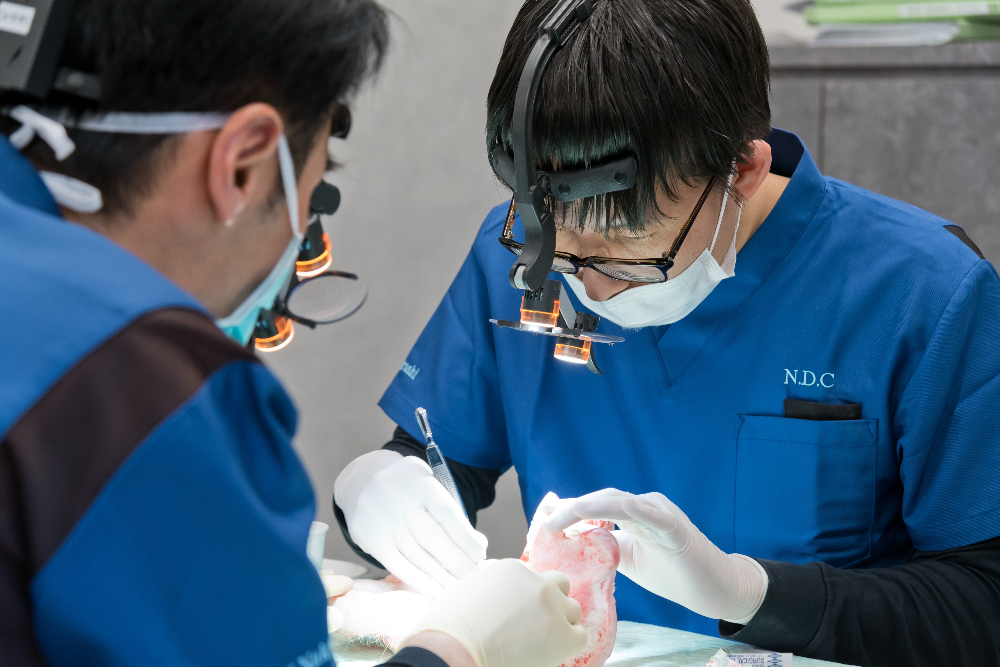
基礎を固めたいまずは一般歯科を確実に。
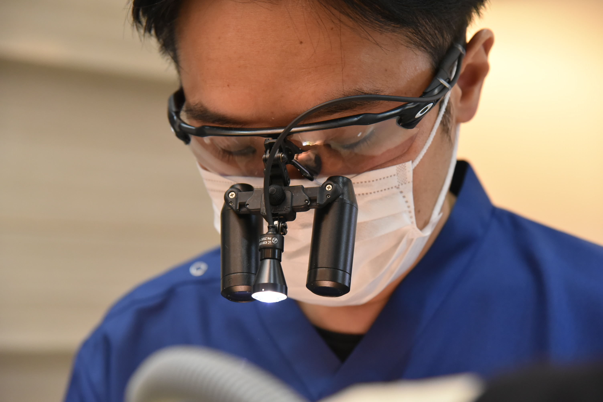
インプラントを学ぶ安全第一の実践的指導。
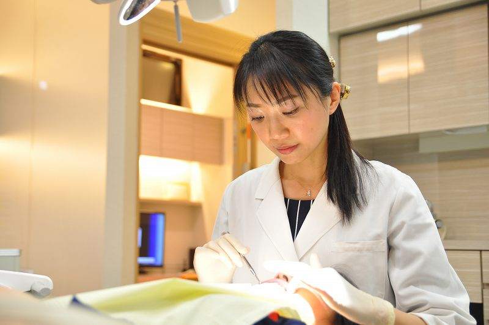
矯正を学ぶ日本矯正歯科学会認定医による。
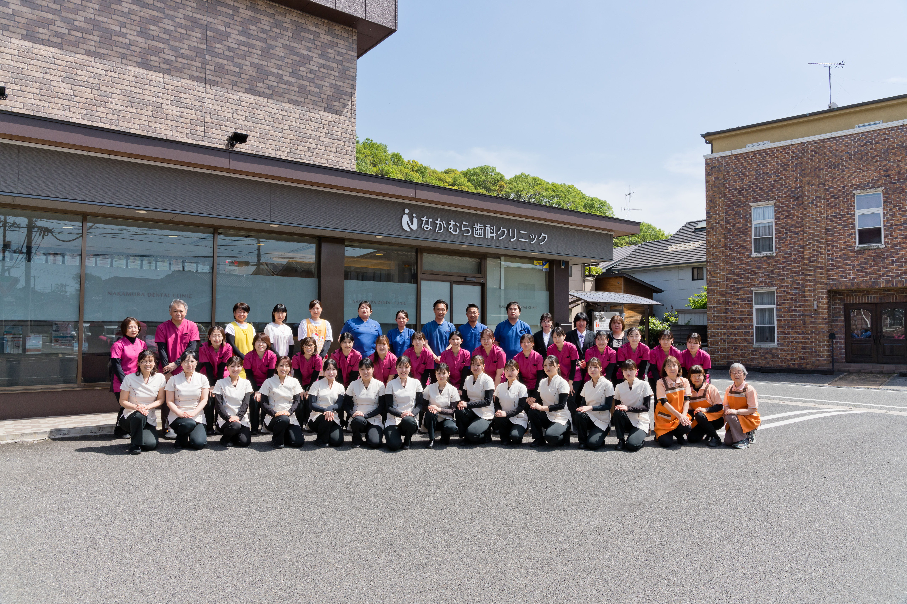
医院運営・マネジメントマーケティングや医院運営など、臨床以外のマネジメントについても学ぶ機会があります。
仕事も、自分の人生も大切にしたい。多様な働き方と充実した福利厚生でサポートします。
歯科医師9名を含む47名のチームで診療しています。
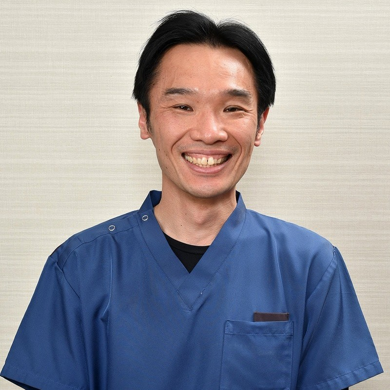
院長 中村幸生／2001年 神奈川歯科大学卒業／厚生労働省指定 歯科医師臨床研修指導歯科医／OSSTEM IMPLANT 臨床研究歯科医院（2022年認定）
これから歯科医師として一歩を踏み出す皆さん、はじめまして。なかむら歯科クリニック院長の中村幸生です。皆さんは今、3年後、5年後、10年後の自分の姿を思い描けていますか？大きな希望と共に、将来への漠然とした不安も感じているかもしれません。
私自身、研修医時代は厳しい環境に身を置き、がむしゃらに勉強と臨床に打ち込む毎日でした。厳しい競争の中、優れた先輩たちから技術や知識を吸収し、休みの日にはセミナーへ駆け込む。その中で「もっと上手くなりたい」という情熱が、私を突き動かす原動力となりました。
私が目指すのは、単に治療技術を教える場ではありません。「いつまでも美味しくご飯が食べられるように」という理念のもと、患者様を笑顔にし、その笑顔を守る「人財」を育てることです。
学生時代の経験や現在の自分に自信がなくても、何も心配はいりません。大切なのは「これからどうなりたいか」「何を成し遂げたいか」という熱い想いです。歯科医師人生の基盤となるこの最も大切な時期を、どこで、誰と、どう過ごすか。私たちの情熱を肌で感じてみませんか。

徳島大学卒職場の雰囲気は明るく、困ったことや気になることがあれば相談しやすい環境だと感じています。 歯科医師だけでなく、衛生士さんや受付スタッフも含めて、患者様のためにどうするのが良いかを自然に話し合えるところが、この医院の良さだと思います。
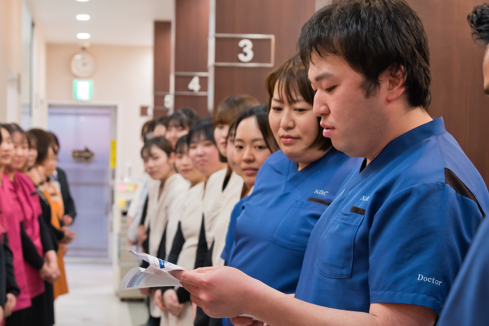
朝日大学卒全ての症例に対して治療計画立案から治療終了まで1人で行うことができます。 また症例相談したい場合や、治療で助けが必要になった場合は院長をはじめ、他の先生方がフォローしてくださるので安心です。 私は治療時間が押してしまった時にはいつも助けていただいています。
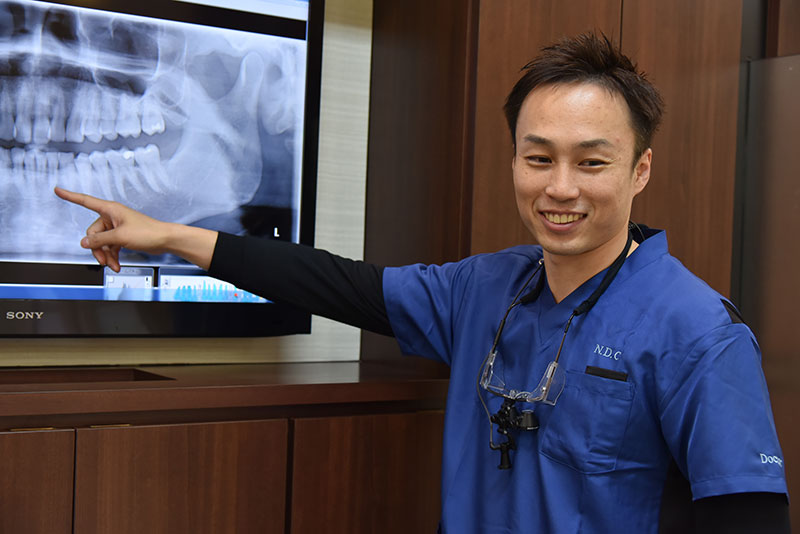
鶴見大学卒（卒業歯科医師）就職前に、見学した風景と自分が勤務してから見る風景に差がなかったことは良かったです。スタッフ同士も仲が良く、勤務しやすいと考えています。また、採用面接時に、自分が希望していた自費治療も手掛けることができ、大変満足しています。
見学のみOK・ZOOM面接可・LINE相談可。
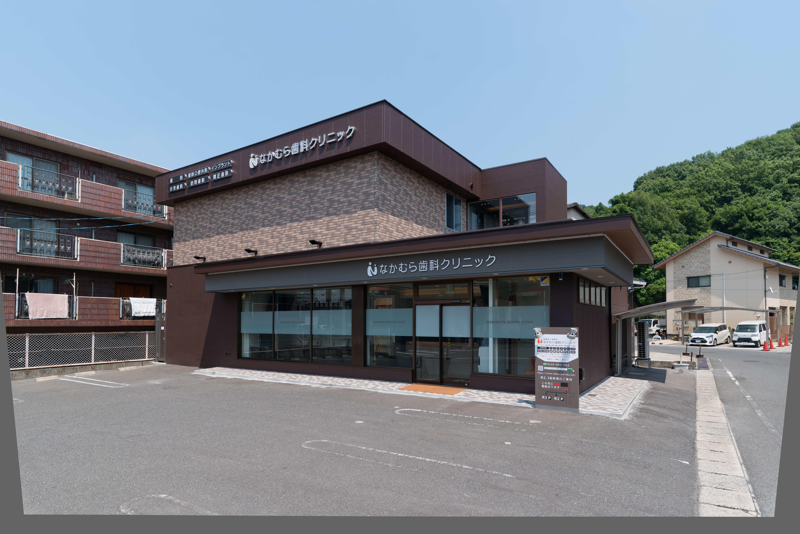
面接なしで、医院の雰囲気だけでも歓迎です。
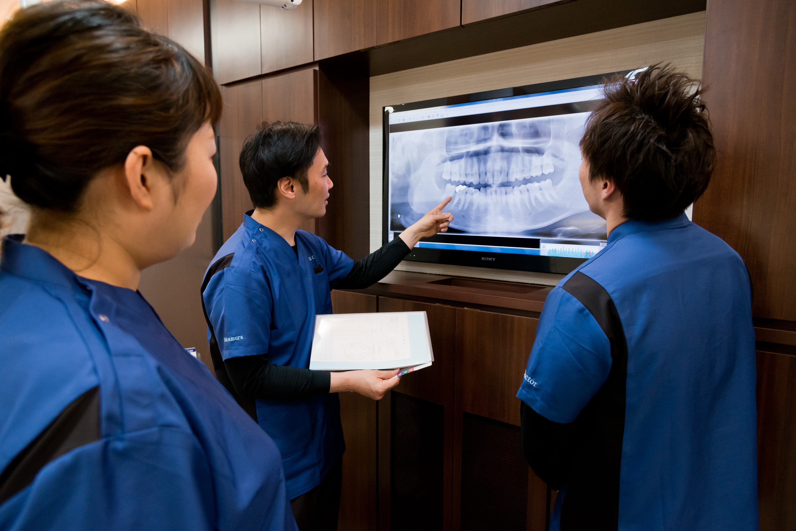
書類選考・面接・見学を経て、採用の決定となります。
本ページでは、卒後臨床経験2年目以上の歯科医師を主な募集対象としています。臨床研修医の方は、臨床研修施設向けの募集ページをご覧ください。
臨床研修医の方はこちら
勤務開始当初は安定した固定給で基礎を固めていただき、その後は能力に応じて能力給（歩合18～22％）へと移行する仕組みをご用意しています。最初から無理に歩合で稼ぐことを求める環境ではありません。
未経験の方もサポートします。セミナー受講、院長のオペのアシスタント、術前診断、サージカルガイドを使用したオペへと段階的に経験でき、オペ時は院長がフルサポートします。
週休2日または週休3日（週4常勤）から選べます。短時間常勤も相談可能です。
はい。面接なしの見学のみでも歓迎しています。
可能です。遠方から転居する常勤歯科医師には住宅手当（5万円/月）、引越しお祝い金10万円～（相談）があり、新幹線通勤を含めた交通費も個別に相談可能です。
はい、ZOOMでのオンライン面接に対応しています。
産休・育休取得の実績があり、男性歯科医師の育休取得実績もあります。
| 週5常勤 | 週4常勤 | 短時間常勤 | |
|---|---|---|---|
| 給与（総支給） | 505,000円～705,000円 | 400,100円～575,100円 | 389,700円～543,200円 |
| 勤務時間 | 8:00～18:00（休憩60分） | 要相談 | 相談可 （勤務できる曜日・時間帯） |
| 休日 | 週休2日 （日曜・祝日休み／シフト制） | 週休3日 | 週休2日・要相談 |
| 休暇 | GW・夏期・冬期・特別休暇・有給休暇 | ||
| 福利厚生・待遇 | 社会保険完備・厚生年金・雇用保険・労災／住宅手当・交通費／昇給 年1回／セミナー参加支援／学会出席費用の補助（要相談） ※固定残業代は実際の残業時間にかかわらず支給。超過分は別途支給。 | ||
| 応募条件 | 歯科医師免許をお持ちの方（卒後臨床経験2年目以上・ブランク可） 最低3年以上の勤続を希望します | ||
| 選考 | 書類選考・面接・見学（見学のみもOK）。提出書類：志望理由書、歯科医師免許証、写真付き履歴書 | ||
関連ページ
 p class="text-sm text-gray-700">給与や働き方も気軽に質問できます。
p class="text-sm text-gray-700">給与や働き方も気軽に質問できます。